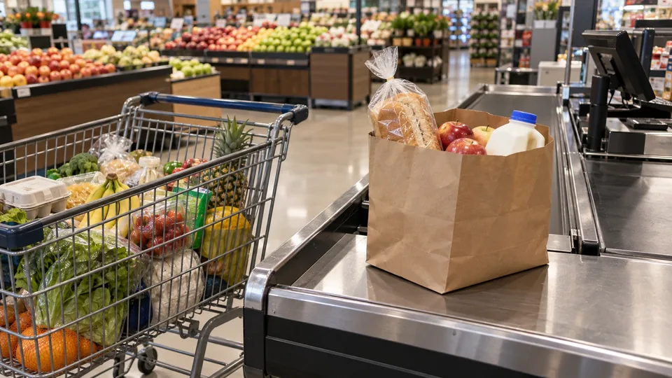

U.S. Producer Prices Jump 1.3% as Retail Sales Offer an Uneven Growth Signal
Thursday’s reports combine stronger price pressure with higher dollar sales. The distinction between spending more and buying more is central to the economic outlook.

U.S. producer prices rose 1.3% in September, the largest monthly increase since March 2022, while retail and food-services sales increased 0.8%. The reports released on October 15 leave markets facing an awkward combination: businesses are receiving higher prices, and consumers are spending more dollars, without a clear indication that the extra spending represents equally strong growth in purchases.
The Bureau of Labor Statistics put annual producer-price inflation at 6.3%. Goods prices rose 2.6% over the month and services prices increased 0.8%. Excluding food, energy and trade services, the index rose 0.5% monthly and 5.0% annually. That narrower measure is distinct from an index excluding only food and energy.
Energy led, but the increase reached beyond fuel
The BLS said energy accounted for more than 80% of September’s increase in final-demand goods prices. Producer gasoline prices jumped 20.3%. The release also showed a 3.4% increase in transportation and warehousing services. These are producer-side measures, not increases that can be assigned directly to a household’s next bill.
A delivery company buying fuel, a distributor buying transport and a retailer buying inventory face different contracts and timing. Some costs reset quickly; others are fixed for a period. Whether the final customer pays more depends on those arrangements, competition and the ability of a business to absorb a narrower margin.
That is why a producer-price jump is evidence of pressure rather than a mechanical forecast for the next consumer inflation release. A company might charge more, reduce a promotion, change its supplier or accept lower profit. The same input shock can produce different outcomes across those businesses.
Higher sales are not a direct measure of buying more
The Census Bureau estimated September retail and food-services sales at $745.0 billion, up 6.3% from a year earlier. August’s monthly increase was revised to 1.3% from 1.1%. The figures adjust for seasonal and calendar effects, but not for changes in prices.
Consider a hypothetical store selling 100 identical items at $10 each in one month and $10.80 the next. Revenue rises 8% even if the number sold is unchanged. That example is not an estimate of September’s actual sales volumes; it illustrates why a dollar-sales report cannot settle the question on its own.
Reuters reported that the retail control group, excluding autos, gasoline, building materials and food services, increased just 0.1% after a stronger August. That gives the headline increase a less convincing claim to broad consumer momentum, although a single monthly control-group reading is not a verdict on the entire economy.
Margins and volumes will decide the earnings story
Retailers’ next reports can provide evidence the aggregate releases cannot: transaction counts, units per basket, promotional spending and gross margins. Rising sales with falling units would describe a different business environment from rising sales supported by more customers.
For manufacturers and transport operators, the relevant comparison is the price they receive against the costs they pay. A higher selling-price index does not guarantee a higher profit margin. The timing of cost increases can leave earnings exposed even when revenue looks strong.
Thursday’s figures make it harder to argue that price pressure has faded cleanly. They also make it risky to call the consumer uniformly strong from the sales headline. The next test is how much of September’s dollar growth survives adjustment for prices, and how much of the cost increase businesses can pass on without losing orders.
Sources (4)
Related reading: The consumer inflation report · Loan payment calculator.
For informational purposes. This article is not investment advice.